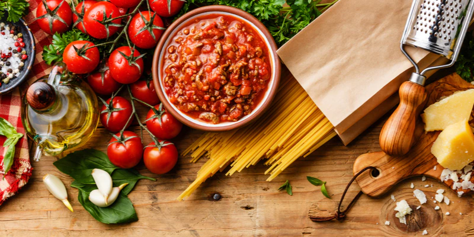

Cucinando
Ricette italiane
Ricette abruzzesi
Ricette venete
Risotto all'Amarone
Descrizione piatto
Il risotto all’Amarone è un saporito primo piatto preparato con ingredienti di ottima qualità provenienti dalla zona di Verona. Il riso usato per questa ricetta è il Vialone Nano, coltivato nella Bassa veronese e protetto dal marchio IGP, che viene tostato in padella con uno scalogno tritato e midollo di bue e sfumato con l’Amarone della Valpolicella, un ottimo vino rosso dal sapore pieno e vellutato, prodotto nella zona della Valpolicella. Per ultimo si manteca il risotto con il Monte Veronese grattugiato, un formaggio di latte vaccino fatto nella provincia settentrionale di Verona. Il risotto all’Amarone è una ricetta tutta da provare, dal gusto avvolgente e corposo, che racchiude in un piatto alcuni dei sapori più apprezzati della cucina veneta.
Ingredienti
- Riso vialone nano 320g
- Vino rosso Amarone della Valpolicella 350ml
- Monte Veronese da grattuggiare 60g
- Scalogno 50g
- Burro 60g
- Midollo di bue 60g
- Brodo di carne 1l
- Sale fino q.b.
Baccalà alla vicentina
Descrizione piatto
Il baccalà alla vicentina è la ricetta simbolo della città di Vicenza. Un piatto conosciuto e apprezzato in tutto il mondo, grazie alla sua semplicità e al suo inconfondibile sapore. Essendo una ricetta regionale non volevamo cadere in alcun errore e per andare sul sicuro abbiamo ospitato lo chef Lorenzo Cogo, d'origini vicentine, che ci ha preparato questo delizioso secondo piatto, il cui protagonista protagonista è il baccalà, immancabile nella cucina casalinga con le sue varianti in umido e al forno. Al contrario di quanto si possa pensare, leggendo il nome della ricetta, questa non è realizzata con il vero e proprio baccalà, ma con lo stoccafisso in quanto i vicentini associano anche al merluzzo essiccato il nome di baccalà. La lunga cottura rende le carni magre di questo pesce molto tenere, complice anche l’aggiunta del latte che ingentilisce il gusto deciso tipico del merluzzo essiccato. Noi oggi vi invitiamo a provare la nostra versione!
Ingredienti
- Stoccafisso (tipo ragno, ammollato da circa 3 giorni) 1kg
- Cipolle bianche 300g
- Sarde sotto sale dissalate 40g
- Farina 00 q.b.
- Sale grosso q.b.
- Latte intero 180g
- Grana Padano DOP 20g
- Pepe nero q.b.
- Olio extravergine d'oliva 180g
- Prezzemolo q.b.
Gnocchi di malga
Descrizione piatto
Con la ricetta di oggi, Giulia Spiazzi, del blog Cooking Giulia, ci farà scoprire un primo piatto della tradizione montanara veronese: gli gnocchi di malga o gnocchi "sbatui". Gli gnocchi di malga sono un piatto che nasce nelle prealpi venete, in particolare in Lessinia, una piccola oasi incontaminata, dove la natura resiste ancora all’intervento dell’uomo. I pascoli e le malghe sono l'origine di questo piatto semplice e gustoso, che i contadini preparavano durante la stagione estiva, quando si dedicavano all’alpeggio. Gli gnocchi di malga sono proprio il risultato di questo stile di vita solitario ed essenziale, durante l’alpeggio i malgari vivevano in zone isolate e difficilmente raggiungibili, così cucinavano i loro pasti con i pochi prodotti di cui disponevano: formaggio, burro e farina. Gli gnocchi di malga sono quindi un piatto preparato con ingredienti genuini, ma anche piuttosto sostanzioso, adatto al clima rigido e al duro lavoro dei pastori. Nella ricetta proposta da Giulia, gli gnocchi vengono preparati con un impasto di farina e acqua bollente “sbattuto” energicamente, da qui “gnocchi sbatui” ovvero “gnocchi sbattuti”. Si condiscono con il burro fuso, meglio se un burro artigianale di malga per ottenere un gusto più originale, e vengono arricchiti dal sapore deciso del Monte Veronese stravecchio, un formaggio che ha acquisito la denominazione di origine protetta già nel 1996. Dopo un lungo periodo di oblio, questo piatto nutriente e, in particolare la variante proposta da Giulia con il Monte stravecchio, è tornato ad essere proposto dai ristoratori della Lessinia e anche nelle malghe che costellano questo luogo meraviglioso. Andiamo allora a scoprire i segreti di questo piatto tradizionale e appetitoso!
Ingredienti
- Per l'impasto
- Acqua 450ml
- Farina tipo '00' 500g
- Sale fino 5g
- Per il condimento
- Monte Veronese Stravecchio 75g
- Grana Padano DOP 75g
- Burro 150g
- Salvia q.b.